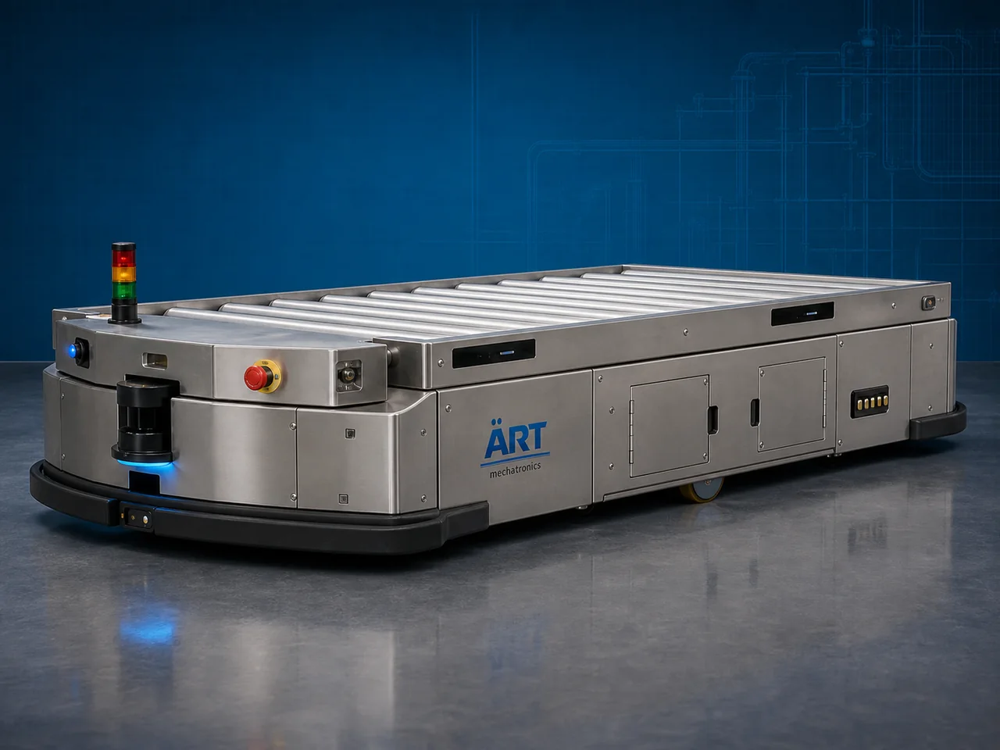

Automated Guided Vehicle – AGV Machine (Industrial Autonomous Material Handling & Smart Factory Automation System)
An Automated Guided Vehicle (AGV) Machine, also known as an Industrial AGV System or Autonomous Material Handling Vehicle, is an advanced robotic automation solution designed for automatic transportation, movement, loading, unloading, pallet transfer, warehouse logistics, and smart factory material handling without manual intervention.

About the Automated Guided Vehicle (AGV)
AGV systems are widely used for:
- Autonomous material transportation
- Warehouse automation
- Smart factory logistics
- Pallet movement automation
- Production line material supply
- Automated storage and retrieval operations
The machine improves:
- Industrial automation efficiency
- Material handling speed
- Labor reduction
- Workplace safety
- Logistics optimization
- Operational productivity
AGV machines use:
- Autonomous navigation systems
- Sensors and safety scanners
- Laser or magnetic guidance technology
- PLC and intelligent control systems
- Battery-powered drive systems
to move materials automatically across industrial facilities.
Automated Guided Vehicle systems are widely used in industries such as:
Manufacturing industries
Automobile industries
Warehousing & logistics
E-commerce fulfillment centers
Pharmaceutical industries
Food processing industries
Electronics industries
Smart factories
where fully automated material transportation and warehouse automation are essential.
The machine is highly suitable for:
- Pallet transportation
- Warehouse automation
- Production line feeding
- Material transfer automation
- Smart logistics systems
- Automated factory operations
ART Mechatronics offers high-performance AGV machines, engineered for smart factory automation, autonomous industrial operation, intelligent navigation, and reliable long-term material handling performance.
Working Principle of Agv Machine
Pallets, cartons, containers, or industrial products are loaded onto AGV platform
AGV follows predefined routes using:
- Laser navigation
- Magnetic strips
- QR code guidance
- LiDAR systems
- Vision-based navigation
Vehicle moves autonomously without human driving.
Machine transports:
- Pallets
- Boxes
- Cartons
- Containers
- Industrial components
- Raw materials between different factory or warehouse locations automatically.
AGV uses: Obstacle detection sensors Safety scanners Collision avoidance systems to ensure safe operation.
AGV integrates with: Warehouse management systems (WMS) ERP systems Conveyor systems Robotic systems Smart factory automation platforms
Material unloaded automatically at destination point and AGV returns for next task cycle
Types of Automated Guided Vehicle
MACHINES
- 1. Pallet AGV
Designed for: ✔ Automatic pallet transportation systems
- 2. Tugger AGV
Used for: ✔ Pulling multiple carts and trailers inside factories
- 3. Unit Load AGV
Suitable for: ✔ Automated transportation of individual products and loads
- 4. Forklift AGV
Uses: ✔ Autonomous forklift technology for warehouse automation.
- 5. Heavy Duty AGV
Designed for: ✔ Large industrial and manufacturing operations
- 6. Smart AMR/AGV System
Suitable for: ✔ AI-based autonomous warehouse and factory automation systems
Industries Using Agv Machines
🏭 Manufacturing Industry Automated production material handling systems 🚗 Automobile Industry Component transfer and assembly line automation 🚚 Warehousing & Logistics Warehouse and pallet movement automation 🛒 E-Commerce Industry Parcel and fulfillment center automation systems 💊 Pharmaceutical Industry Hygienic automated material transfer systems 🍃 Food Processing Industry Automated ingredient and product movement systems 💻 Electronics Industry Precision component transportation systems 🏢 Smart Factory Industry Industry 4.0 automation and autonomous logistics systems
Features & Advantages
- Fully autonomous material transportation
- Reduces manual labor and forklift dependency
- Improves warehouse and factory productivity
- Smart navigation and obstacle avoidance systems
- Continuous industrial operation
- Enhances workplace safety and efficiency
- Flexible route programming capability
- Integration with smart factory automation systems
- Energy-efficient battery-powered operation
Technical Highlights
Navigation Technology: Laser guidance LiDAR navigation Magnetic guidance Vision navigation Load Capacity: Light-duty to heavy-duty industrial AGVs Drive System: Battery-powered electric drive Safety Features: Obstacle detection sensors Emergency stop systems Collision avoidance technology Automation Integration: PLC systems ERP integration WMS integration Operation: Fully automatic autonomous operation
Turnkey Agv Automation Solutions
ART Mechatronics offers: Complete AGV automation systems Warehouse automation integration Smart factory logistics solutions Conveyor and robotic integration systems Installation & commissioning After-sales service & AMC
Why Choose Art Mechatronics
Expertise in industrial automation and smart factory systems Customized AGV solutions for multiple industries High-performance autonomous material handling systems Advanced robotics and navigation technology integration Proven industrial automation performance across sectors
Applications
Manufacturing Plants Automobile Industries Warehousing & Logistics Centers E-Commerce Fulfillment Centers Pharmaceutical Manufacturing Units Smart Factory Facilities
Related Automation & Robotics machines
Get pricing & specs for the Automated Guided Vehicle (AGV)
Share the product, target capacity, current process and plant location. These details help our engineers discuss the right machine or line configuration.
One partner, from design to start-up
ART Mechatronics designs, manufactures, installs and commissions your Automated Guided Vehicle (AGV) solution with regional presence in India, UAE and Thailand.